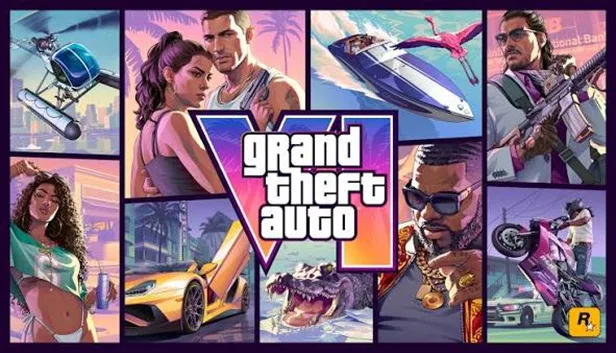

📅 入库时间：11.25 日入库
🎮 游戏类型：开放世界 / 动作犯罪
📦 版本：v1.0.2.1 豪华中文版 全DLC
简介：开放世界犯罪系列正统续作完整版，在阳光明媚的现代都市与周边自由探索，驾驶车辆、接下各类任务、体验双线主角的犯罪剧情，享受广阔沙盒玩法。
如何游玩⚠️：
---------------------------------------------------------------------------------------------------------------------------GAME → 游戏本体
---------------------------------------------------------------------------------------------------------------------------
游戏本体文件，建议 优先下载。解压后得到「Grand Theft Auto VI」文件夹，即为完整游戏本体。
---------------------------------------------------------------------------------------------------------------------------
PLAY → Windows 移植启动器
---------------------------------------------------------------------------------------------------------------------------
由不同开发团队制作的 Windows 移植启动器。下载解压后，选择 GAME 中的「Grand Theft Auto VI」游戏本体目录即可尝试启动游戏。
---------------------------------------------------------------------------------------------------------------------------
⚠️ 重要提醒
----------------------------------------------------------------------------------------------------------------------------
目前部分移植项目已经能够进入游戏世界，支持角色操控以及初期剧情任务体验，但整体仍处于早期开发阶段，存在 帧率偏低、画面渲染异常、运行不稳定 等问题，距离流畅游玩及完整通关还有较大差距。目前更适合技术尝鲜和体验测试，请勿将其视为成熟的 PC 正式版。
----------------------------------------------------------------------------------------------------------------------------
六款 Windows 移植启动器介绍
目前整理了六款不同团队开发的 GTA VI Windows 移植启动器，全部基于 Xbox Series v1.0.2.1 游戏本体。 ----------------------------------------------------------------------------------------------------------------------------
本次采用游戏本体与启动器分开发布的方式：
*GAME： 存放游戏本体，只需下载一次。 *PLAY： 存放不同版本的移植启动器，可根据显卡型号和项目进度自行选择。 *共用本体： 六款启动器均可使用同一份游戏本体，无需重复下载。 *后续更新： 如果某个项目推出新版本，只需下载对应的新启动器即可，无须重新下载游戏本体。 ----------------------------------------------------------------------------------------------------------------------------
多款启动器应该怎么选择？
如果使用 NVIDIA 8GB 显存显卡，可以优先尝试 ztrx；Radeon 显卡用户建议优先测试新版 victory-amd。 如果更关注序幕画面渲染、场景表现及帧率变化，也可以尝试 victory-fork 或 victory-perf。不同项目的优化方向有所区别，实际表现还需要结合自己的硬件进行测试。 ----------------------------------------------------------------------------------------------------------------------------
01. ztrx｜NVIDIA 8GB 显卡尝鲜
RTX 3050 8GB 显卡在游戏内测试约为 1–3 FPS。项目作者曾连续运行超过 90 分钟，并推进至序幕追船场景，但阴影区域仍然存在发黑现象。 适合想要提前体验启动流程、测试游戏兼容性的 NVIDIA 用户。 ----------------------------------------------------------------------------------------------------------------------------
02. victory-fork｜序幕渲染与性能改进
RTX 4070 12GB 显卡开启实验性选项后，序幕前几个房间测试帧率约为 7–8 FPS。 本站采用发布版本 0b0074e，使用 Series X 默认设置。当前暗处仍可能出现画面发黑问题，进入开放世界后也有显卡设备丢失的记录。 ----------------------------------------------------------------------------------------------------------------------------
03. AnyXboxX｜序幕过场画面对比
RTX 4070 SUPER 显卡在作者的一次序幕测试中，运行帧率约为 5.3–6.9 FPS。该版本采用 AnyXboxX 项目的 Victory 分支，已经能够播放序幕过场动画，不过部分场景仍然存在画面缺失问题。 ----------------------------------------------------------------------------------------------------------------------------
04. victory-amd｜Radeon 显卡优先推荐
这是目前 Radeon 用户值得优先尝试的一个分支。 在 RX 7800 XT 16GB 显卡的同条件测试中，出现超过 1 秒卡顿帧的采样区间从原来的 42% 降低至 14%，性能表现有所改善。本站采用版本 003beef。该版本序幕第一个房间已经能够显示墙面，但暗处仍可能存在光照缺失问题。 ----------------------------------------------------------------------------------------------------------------------------
05. victory-perf｜降低渲染比例提升性能
该分支主要通过降低内部渲染比例来改善运行表现。 RTX 4070 SUPER 显卡测试中，部分室内场景约为 9–14 FPS，复杂场景约为 4.5–6.5 FPS。目前采用 Series S 模式，内部渲染比例为 50%，并通过简化补光改善暗处画面表现。 ----------------------------------------------------------------------------------------------------------------------------
06. XCL｜独立兼容层主线测试
XCL 采用 独立兼容层开发路线，与其他 Victory 系列分支有所不同。 本站采用主线版本 06c9f55，主要测试启动流程、游戏菜单以及首次设置，并合入了图形命令处理相关修复。 目前剧情加载仍可能出现卡住的情况，运行还需要 Windows Xbox 游戏服务支持，适合对不同移植技术路线感兴趣的玩家尝试。 ----------------------------------------------------------------------------------------------------------------------------
如何使用移植启动器运行游戏？
第一步：解压游戏本体和启动器
分别解压 GAME 游戏本体和 PLAY 中选择的移植启动器。
解压完成后，双击对应的「移植启动器.exe」运行程序。
第二步：指定游戏本体目录 将解压得到的「Grand Theft Auto VI」文件夹拖入启动器，也可以点击程序中的「选择目录」手动指定路径。
✓ 目录识别注意
选择的游戏目录中应该能够直接看到 game_scarlett_master.exe 文件，不要选择错误的上级目录。
第三步：启动游戏
当启动器提示 「游戏目录可用」后，点击「开始游戏」即可尝试运行。
首次启动如果出现语言选择界面，可以选择 「中文（简体）」。
最后说明
以上帧率及运行进度均来自各个开发项目公开的测试记录，不同硬件、驱动版本和运行环境可能产生不同结果。
目前 GTA VI Windows 移植仍处于早期尝试阶段，部分版本能够进入序幕甚至初步探索游戏世界，但 低帧率、画面异常、程序退出 等问题依然存在。
建议先下载 GAME 游戏本体，再根据自己的显卡型号选择 PLAY 中的启动器。后续项目更新时，只需要替换启动器即可继续测试。